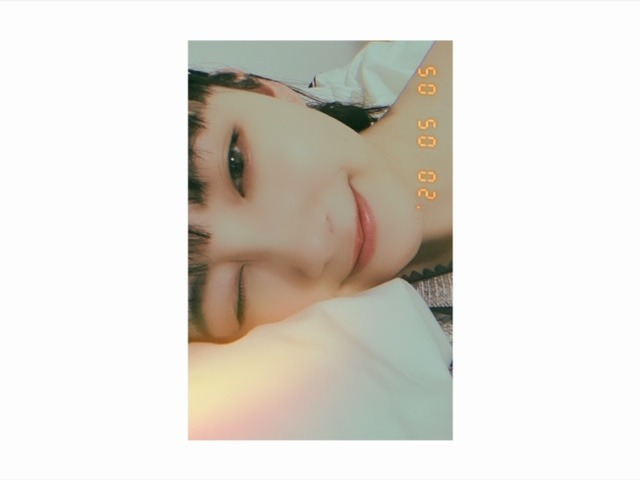

2020/0506Wedわらいかた
昨日母の日じゃなかったんですね
てっきり母の日だと勘違いしていて
お母さんに手紙を渡して
母の日だからメイクしてあげる〜って
メイクをしてあげて2ショットも撮って
母の日お母さん喜んでくれたかなぁと
思ってたんですけど
寝る直前にネットでたまたま
母の日までもうすぐ!
というのをみて
...え？
となりまして...
日にちを
すっかり勘違いしていました
お母さんに今日じゃないやん!
って言ったら
そうよ笑 と言われました
何で言ってくれなかったのか...
また改めてしよう

食べ過ぎでもちもちほっぺになってきました~
ということで
お家でダンスをしたり腹筋したり
炭水化物食べないようにしたり
長風呂で汗かいたりしてます...
気をつけないと!
あと最近地震が多いので
防災避難グッズの準備を
みなさんしましょう!
堀家も今日改めて震災に備えて
色々準備しています☺︎



やはり黒髪が落ち着きますね
今日は
9時間9人9の扉を
久しぶりにやってます
マインクラフトも早く始めたいし
荒野行動も逃げるばっかりで
いつも5位とか微妙な順位だし
全然倒せてないので上手くなりたいです
あとTikTok面白くてずっと見てられます
何であんなに面白いんだろう...
いつかやりたいな

ではは
2020/05/06 19:54
コメント(383)
堀ちゃん、こんばんは。
昨日、大きな地震があったね。
今の家に引っ越してきたばかりの時は地震の多さに驚いたけど、今では「あぁ、またか。」「今、～やってる最中だよぉ、ちょっとやかましいよぉ～」っていう、あってはならない余裕に満ちている
9時間9人9の扉もマインクラフトも荒野行動もいっぱい楽しんでね。
・・・それらが何か、分からないけど
そうそう、モバイルサイトの乃木坂世界旅のガチャをやったら、堀ちゃんときいちゃんのニューカレドニアの画像が当たったよ
やったぜ♪
昨日、大きな地震があったね。
今の家に引っ越してきたばかりの時は地震の多さに驚いたけど、今では「あぁ、またか。」「今、～やってる最中だよぉ、ちょっとやかましいよぉ～」っていう、あってはならない余裕に満ちている
9時間9人9の扉もマインクラフトも荒野行動もいっぱい楽しんでね。
・・・それらが何か、分からないけど
そうそう、モバイルサイトの乃木坂世界旅のガチャをやったら、堀ちゃんときいちゃんのニューカレドニアの画像が当たったよ
やったぜ♪
ブログ更新ありがとうございます！
勘違いするとこもかわいい気がします笑笑
けどそうやって感謝できるのって素敵な事だと思います！また、するのもすごいと思います！
もっちりほっぺもかわいいですが、トレーニング頑張ってください！
最近地震多すぎて怖いですよね...未央奈さんも気をつけてください！
荒野行動難しいですよね笑
次のブログも楽しみにしてます！
勘違いするとこもかわいい気がします笑笑
けどそうやって感謝できるのって素敵な事だと思います！また、するのもすごいと思います！
もっちりほっぺもかわいいですが、トレーニング頑張ってください！
最近地震多すぎて怖いですよね...未央奈さんも気をつけてください！
荒野行動難しいですよね笑
次のブログも楽しみにしてます！
未央奈最高
昨日の東京ドームライブしっかりみたよ
みんな可愛いかった
今日も楽しみ
最近雷と地震多いからこわいね
みんな可愛いかった
今日も楽しみ
最近雷と地震多いからこわいね
未央奈ちゃんブログ更新有難う！
心の癒しです…
心の癒しです…
言ってくれないお母さん面白い笑
これは確信犯ですね～
ていうか5日はこどもの日だし…笑
来月の父の日は間違えないでね！
母の日とちがって今度は第三日曜だよ！
第二と勘違いしてて、仕事で盛大に父の日セールをしようとした自分みたくならないように笑
でもお母さんきっと、うれしかっただろうけどね◎
最近は地震も多いし、また肌寒くなって困っちゃう
調子にのって半袖デビューしたけど昨日の夜に鼻風邪引きそうになって、あわてて暖かくして寝たら悪化せずに済みました…
みおなも気を付けてね
写真のみおな、今日もきれい～♪
これは確信犯ですね～
ていうか5日はこどもの日だし…笑
来月の父の日は間違えないでね！
母の日とちがって今度は第三日曜だよ！
第二と勘違いしてて、仕事で盛大に父の日セールをしようとした自分みたくならないように笑
でもお母さんきっと、うれしかっただろうけどね◎
最近は地震も多いし、また肌寒くなって困っちゃう
調子にのって半袖デビューしたけど昨日の夜に鼻風邪引きそうになって、あわてて暖かくして寝たら悪化せずに済みました…
みおなも気を付けてね
写真のみおな、今日もきれい～♪
堀ちゃんブログ更新ありがとう！！！
もちほっぺ未央奈最高です。
もちほっぺ未央奈かわいい。
もちほっぺ未央奈最高です。
もちほっぺ未央奈かわいい。
昨日は母の日じゃなくて与田ちゃんの誕生日だよ！
未央奈ちゃんブログ更新ありがとう！
さくらちゃんとあやめちゃんとでんちゃんと同じ愛知県出身の愛知の覇王です！
昨日の真夏の全国ツアー2017ファイナルin東京ドームのライブ配信見たよ！
未央奈ちゃんの黒髪ショートめっちゃ可愛かったよ！
また、黒髪ショート見たいです！
体調を崩さないように気をつけて頑張ってください！
応援してます！
質問
未央奈ちゃんの好きな名古屋名物を教えて！
映像研には手を出すなのドラマって見てる？
さくらちゃんとあやめちゃんとでんちゃんと同じ愛知県出身の愛知の覇王です！
昨日の真夏の全国ツアー2017ファイナルin東京ドームのライブ配信見たよ！
未央奈ちゃんの黒髪ショートめっちゃ可愛かったよ！
また、黒髪ショート見たいです！
体調を崩さないように気をつけて頑張ってください！
応援してます！
質問
未央奈ちゃんの好きな名古屋名物を教えて！
映像研には手を出すなのドラマって見てる？
未央奈ちゃんこんばんは。母の日間違えちゃったんだ(笑)。そんな未央奈ちゃんもまたカワイイね。
お母さんが何も言わなかったのは、未央奈ちゃんの優しさが嬉しかったからでしょう。お互いの優しさってことじゃないかと僕は思います。今年は5月いっぱいを「母の月」に、なんて話も出ているようですから、母の日よりも前にプレゼントしたって何も問題ないでしょ。
話は変わるけど、僕もやっぱり未央奈ちゃんの黒髪大好きですね。
また次のブログも楽しみにしてます。
お母さんが何も言わなかったのは、未央奈ちゃんの優しさが嬉しかったからでしょう。お互いの優しさってことじゃないかと僕は思います。今年は5月いっぱいを「母の月」に、なんて話も出ているようですから、母の日よりも前にプレゼントしたって何も問題ないでしょ。
話は変わるけど、僕もやっぱり未央奈ちゃんの黒髪大好きですね。
また次のブログも楽しみにしてます。
未央奈のTiktokみたいな
最近、地震が多いですね。
今年は沖縄も多いんです。
沖縄も昔から定期的に大きな地震があり、今はその周期にさしかかっているみたいで、いつきてもおかしくないという話も。
怖いですね。
もちもちほっぺ大好き。
今年は沖縄も多いんです。
沖縄も昔から定期的に大きな地震があり、今はその周期にさしかかっているみたいで、いつきてもおかしくないという話も。
怖いですね。
もちもちほっぺ大好き。
未央奈ちゃん ブログ更新ありがとう
母の日間違えちゃう未央奈ちゃんも分かってたお母さんも可愛いし，ほっこりしました 地震や災害の準備も，未央奈ちゃんを見習ってしっかりしようと思います！お洋服も準備して寝る未央奈ちゃんさすがです。私は秋田なのでもう少しで学校が始まりますが完全防備で行こうと思ってます笑 未央奈ちゃんも引き続き体には気をつけてね。ずっと応援してます。今日も大好きです。
母の日間違えちゃう未央奈ちゃんも分かってたお母さんも可愛いし，ほっこりしました
一緒に荒野行動したいです！
未央奈ー！
ブログ更新ありがとう
母の日間違えたのね
そういうところが未央奈らしくて好き
次の更新も待ってるね〜
ブログ更新ありがとう
母の日間違えたのね
そういうところが未央奈らしくて好き
次の更新も待ってるね〜
もんぞーくん
今にもおしゃべりしそうな顔してるね
さっきから雷スゴいんですけど
あの爆音、近くに落ちたろーーこわ
未央奈ブログ更新ありがとう！！
今日も写真めっちゃ可愛い
いつも癒されてます！！
てか、未央奈、母の日間違えらなんてめっちゃ可愛い❤️
そして、マイクラめっちゃ楽しいから、早くやってみて下さい！私は、マイクラやってると、現実世界の時間が過ぎるのが早いのでいつも驚きます。
そして、質問 ホラー映画を見る時、いつも何していますか？
次回のブログも楽しみにしています！！
今日も写真めっちゃ可愛い
いつも癒されてます！！
てか、未央奈、母の日間違えらなんてめっちゃ可愛い❤️
そして、マイクラめっちゃ楽しいから、早くやってみて下さい！私は、マイクラやってると、現実世界の時間が過ぎるのが早いのでいつも驚きます。
そして、質問 ホラー映画を見る時、いつも何していますか？
次回のブログも楽しみにしています！！
ブログ更新ありがとう！
子どもの日と母の日間違えるの可愛いですね！
未央奈が荒野行動やってるんやったら俺もやってみようかな〜
地震本当怖いですよね…
いつ起きてもいいようにしっかり対策しましょう！
本当に気をつけて！
子どもの日と母の日間違えるの可愛いですね！
未央奈が荒野行動やってるんやったら俺もやってみようかな〜
地震本当怖いですよね…
いつ起きてもいいようにしっかり対策しましょう！
本当に気をつけて！
広告で明日は母の日ってやつがあって私も間違えてしまいました。
ブログ更新ありがとう！
母の日間違えるって天然でかわいい❤️
いつか荒野行動で戦いたいな〜
母の日間違えるって天然でかわいい❤️
いつか荒野行動で戦いたいな〜
ブログ更新ありがとう！！！
荒野行動してるんだー！！！
私も下手だから上手くなりたいです！！
荒野行動してるんだー！！！
私も下手だから上手くなりたいです！！
ブログ更新ありがとう (*ó▿ò*)
堀さんいつもお綺麗です！笑
堀さんいつもお綺麗です！笑
未央奈～ 今日もモバメとブログ投稿ありがとう！！ホンマに毎日の楽しみやわぁ
今日もモバメとブログ投稿ありがとう！！ホンマに毎日の楽しみやわぁ
お母さんにたくさん色々な事してあげたんやねホンマにいい子や
まだまだ普通の生活を送る事は出来ないけど、毎日を元気に過ごしてくれる事を祈っております
未央奈大好きやぁ～
お母さんにたくさん色々な事してあげたんやね
まだまだ普通の生活を送る事は出来ないけど、毎日を元気に過ごしてくれる事を祈っております
未央奈大好きやぁ～
こんばんは！
ブログ更新ありがとうございます
母の日勘違いしてしまったんですね。でも、お母さんは喜んでると思いますよ。
本当の母の日に改めて、再度何かしないとですね✨
本当に地震が多いです。ほぼ、２日連日で緊急地震速報ですからね…
ゲーム楽しそうですね
では、体調に気を付けて頑張ってください✨
これからも応援してます❗
ブログ更新ありがとうございます
母の日勘違いしてしまったんですね。でも、お母さんは喜んでると思いますよ。
本当の母の日に改めて、再度何かしないとですね✨
本当に地震が多いです。ほぼ、２日連日で緊急地震速報ですからね…
ゲーム楽しそうですね
では、体調に気を付けて頑張ってください✨
これからも応援してます❗
ブログ更新ありがとう
母の日間違えちゃうの可愛い
お母さんにメイクしてあげたんだね！
優しいね
未央奈ちゃんに質問です
未央奈ちゃんが一番好きな芸人さんは誰ですか？
教えてくれたら嬉しいな
次のブログ楽しみにしてるね
母の日間違えちゃうの可愛い
お母さんにメイクしてあげたんだね！
優しいね
未央奈ちゃんに質問です
未央奈ちゃんが一番好きな芸人さんは誰ですか？
教えてくれたら嬉しいな
次のブログ楽しみにしてるね
更新待ってました〜✨
母の日間違えちゃったのね笑かわいい( ¨̮ )
未央奈ちゃんからしたらそんな情報
いらないって思うかもだけど髪の毛切ったんだぁ
今日のブログの未央奈と同じ長さに!!
お姉ちゃんに切ってもらった( ᷇࿀ ᷆ )
地震2日連続だから怖いよね…
ブログタイトルにちなんで…
私、未央奈ちゃんの笑い方好きだよ☺️
いつもつられて同じような笑い方になる笑
次の更新も待ってます︎☺︎
母の日間違えちゃったのね笑かわいい( ¨̮ )
未央奈ちゃんからしたらそんな情報
いらないって思うかもだけど髪の毛切ったんだぁ
今日のブログの未央奈と同じ長さに!!
お姉ちゃんに切ってもらった( ᷇࿀ ᷆ )
地震2日連続だから怖いよね…
ブログタイトルにちなんで…
私、未央奈ちゃんの笑い方好きだよ☺️
いつもつられて同じような笑い方になる笑
次の更新も待ってます︎☺︎
しかし可愛いい。
震災グッズ集めてるなんて
防災意識高くて凄い！
一人暮らしでも役立ちそうなものがあれば
今度教えてください
防災意識高くて凄い！
一人暮らしでも役立ちそうなものがあれば
今度教えてください
未央奈ちゃん、母の日間違えちゃった!!
じゃ10日の日に何か別のことしてあげたらいいかも!! あとゲーマーだった驚きやりすぎて目悪くならない程度にね!
じゃ10日の日に何か別のことしてあげたらいいかも!! あとゲーマーだった驚きやりすぎて目悪くならない程度にね!
更新ありがとう。
母の日勘違いだったけどそれはそれで親孝行になっていいんじゃないかな～。
地震こわいよね。
気をつけてね。
母の日勘違いだったけどそれはそれで親孝行になっていいんじゃないかな～。
地震こわいよね。
気をつけてね。
こんばんは。
ほっこりエピソードですね。
ほっこりエピソードですね。
安心してください。
「日本花き振興協議会」という団体の方々が
今年は「母の日」ではなく5月いっぱいを「母の月」と考えてほしいと
提案しているそうです。
新型コロナウイルスが感染拡大していること、それにより全国に緊急事態宣言が出されていることを受けて、生花店スタッフなどの安全を守るために1ヶ月に期間を拡げたらしく、
あくまでも花を贈ることに関してなのですが、この際関係ありません。
「母の月」として5月5日にお祝いをしたということにしましょう！
( ・∀・)b
5月いっぱいなら何度でもお祝いして、たくさんお母さん孝行出来ちゃいますね(笑)
あ、来月の父の日も忘れないでくださいね。|ｮω･`)
（パパさんの声 代弁）
では、また何かあったらコメントさせていただきますね。m(_ _)m
「日本花き振興協議会」という団体の方々が
今年は「母の日」ではなく5月いっぱいを「母の月」と考えてほしいと
提案しているそうです。
新型コロナウイルスが感染拡大していること、それにより全国に緊急事態宣言が出されていることを受けて、生花店スタッフなどの安全を守るために1ヶ月に期間を拡げたらしく、
あくまでも花を贈ることに関してなのですが、この際関係ありません。
「母の月」として5月5日にお祝いをしたということにしましょう！
( ・∀・)b
5月いっぱいなら何度でもお祝いして、たくさんお母さん孝行出来ちゃいますね(笑)
あ、来月の父の日も忘れないでくださいね。|ｮω･`)
（パパさんの声 代弁）
では、また何かあったらコメントさせていただきますね。m(_ _)m
ヤッホー未央奈ブログありがとーお母さん二回して欲しかったんだ笑、もんぞうとのツーショットかわいい 体に気配りしてもう少し辛抱してくださいね～❗
黒髪ショート最高です！！髪も染めただけでなく切りました？
今東京ドーム公演配信されてますけど、その時の未央奈の髪型1番好きで似ている感じがするので個人的にすごい嬉しいです！！自粛延長で時間が多いと思いますがこれからに向けての長期休暇だと思ってゆっくり休んでください！！
これからも応援してます！
今東京ドーム公演配信されてますけど、その時の未央奈の髪型1番好きで似ている感じがするので個人的にすごい嬉しいです！！自粛延長で時間が多いと思いますがこれからに向けての長期休暇だと思ってゆっくり休んでください！！
これからも応援してます！
黒髪ショートかわいすぎ
かわいい、生きるための糧！
お母さんはきっとうれしかっただよ。
違うよって言って未央奈がガッカリしたりとか、
ええ～って急に素っ気なくなったりとかさせたくなかった
んだよ。
きっと君がとても楽しそうで、嬉しそうで、そんな君
を見て嬉しくて、楽しくて、そして、そんな君の姿に水
を差したくなかったんじゃないかな？
ずっと君を見続けていたい・・・
大人になった君への感慨深さや子供の頃を思い出して
いたんじゃなかろか(笑)・・・親心？
偉そうな、解ったような事を言ってゴメンよ。あはは
ところで、「ないやん！」って地元の言葉かな？
とても親近感が湧いて嬉しいです。
岐阜弁は関西弁に似とるんやろか？
「ないやん」はこっちでは良く使うし、良く聞く。
他にも家で、地元で使ってる言葉を聞いてみたいです。
岐阜特有の方言があったらクイズ形式で教えて(笑)
楽しそうで、みんなも燃え上がるんじゃないかなぁ～
もちもちホッペ、つついてみたいなぁ～
ホッペつついた写真希望！
ゲームはホンマやらんから、よ～わからん
格闘系？ＲＰＧ系？萌え系？競技系？・・・？
う～ん、さっぱりわからん。
うん、うん、黒髪系が良いです。 落ち着きます。
髪を染めてる色々な未央奈も悪くはないけど（いや、
いつも良く似合ってるからカワイイんだけど・・・）
やっぱ自分が思うに君の髪色は黒い髪色が一番似合っ
ていると思ってます。
余程奇抜な色でなければ全てを受け入れますぜ！
地震気になりますね・・・
自分ちは随分前からバッチリ備えてますよぉ～
ヘルメット、ホイッスル、ロープ、職人さん用グローブ
炭に七輪、ラジオに乾電池、キャンプ用ＬＥＤ照明、
組み立て式の簡易トイレ・・・ｅｔｃ、ｅｔｃ
当然保存食も備えてますよぉ～(笑)
一人当たり３日分くらい？ 節約すれば５日位は(笑)
乾パンと缶詰めはマストアイテム・・
長期保存できる水は必須アイテムです。
一人当たり２Ｌペットボトルを３本・・・これは多分
最低必要本数として少ないかも？
長期保存できるレトルト食品なんかもあるよ。
と色々揃えると結構高額になってしまって、ちょっと
やり過ぎか？って思ったり、思わなかったり・・
まぁ～、備えあれば憂いなしってか・・
う～ん、長い・・長いなぁ～
全く読みづらいよね。 ゴメンよ
デハハハ
違うよって言って未央奈がガッカリしたりとか、
ええ～って急に素っ気なくなったりとかさせたくなかった
んだよ。
きっと君がとても楽しそうで、嬉しそうで、そんな君
を見て嬉しくて、楽しくて、そして、そんな君の姿に水
を差したくなかったんじゃないかな？
ずっと君を見続けていたい・・・
大人になった君への感慨深さや子供の頃を思い出して
いたんじゃなかろか(笑)・・・親心？
偉そうな、解ったような事を言ってゴメンよ。あはは
ところで、「ないやん！」って地元の言葉かな？
とても親近感が湧いて嬉しいです。
岐阜弁は関西弁に似とるんやろか？
「ないやん」はこっちでは良く使うし、良く聞く。
他にも家で、地元で使ってる言葉を聞いてみたいです。
岐阜特有の方言があったらクイズ形式で教えて(笑)
楽しそうで、みんなも燃え上がるんじゃないかなぁ～
もちもちホッペ、つついてみたいなぁ～
ホッペつついた写真希望！
ゲームはホンマやらんから、よ～わからん
格闘系？ＲＰＧ系？萌え系？競技系？・・・？
う～ん、さっぱりわからん。
うん、うん、黒髪系が良いです。 落ち着きます。
髪を染めてる色々な未央奈も悪くはないけど（いや、
いつも良く似合ってるからカワイイんだけど・・・）
やっぱ自分が思うに君の髪色は黒い髪色が一番似合っ
ていると思ってます。
余程奇抜な色でなければ全てを受け入れますぜ！
地震気になりますね・・・
自分ちは随分前からバッチリ備えてますよぉ～
ヘルメット、ホイッスル、ロープ、職人さん用グローブ
炭に七輪、ラジオに乾電池、キャンプ用ＬＥＤ照明、
組み立て式の簡易トイレ・・・ｅｔｃ、ｅｔｃ
当然保存食も備えてますよぉ～(笑)
一人当たり３日分くらい？ 節約すれば５日位は(笑)
乾パンと缶詰めはマストアイテム・・
長期保存できる水は必須アイテムです。
一人当たり２Ｌペットボトルを３本・・・これは多分
最低必要本数として少ないかも？
長期保存できるレトルト食品なんかもあるよ。
と色々揃えると結構高額になってしまって、ちょっと
やり過ぎか？って思ったり、思わなかったり・・
まぁ～、備えあれば憂いなしってか・・
う～ん、長い・・長いなぁ～
全く読みづらいよね。 ゴメンよ
デハハハ
ブログありがとね〜！！
私も最近、ダンスとか腹筋しとる！
TWICEさんのシングル曲を制覇しようと試みてます笑
未央奈ちゃん黒髪いいね！てか、何色でも似合う！羨ましい、、私も染めたいよ〜〜オススメあったら教えて欲しい︎︎︎︎︎☺︎
関東の方地震多いみたいやから、未央奈ちゃんも気をつけてね！
私も最近、ダンスとか腹筋しとる！
TWICEさんのシングル曲を制覇しようと試みてます笑
未央奈ちゃん黒髪いいね！てか、何色でも似合う！羨ましい、、私も染めたいよ〜〜オススメあったら教えて欲しい︎︎︎︎︎☺︎
関東の方地震多いみたいやから、未央奈ちゃんも気をつけてね！
すちすちスチップ♥️
未央ちゃんブログ更新有り難うございます。写真集待ってまーす。
堀ちゃん！更新ありがとう！
母の日エピソード
めちゃめちゃ笑っちゃいました笑
堀ちゃんらしいし、
お母さんがしっかり受け入れて
いるところもさすが堀家！笑
堀ちゃん、もちもちほっぺもいいよ！
しっかり体のことを考えて
生活してるとこは
やっぱしさすがだなぁ〜
くれぐれも体調には気をつけてね！
次回の更新も楽しみに待ってます！！
では！
おやすみおな〜！！
母の日エピソード
めちゃめちゃ笑っちゃいました笑
堀ちゃんらしいし、
お母さんがしっかり受け入れて
いるところもさすが堀家！笑
堀ちゃん、もちもちほっぺもいいよ！
しっかり体のことを考えて
生活してるとこは
やっぱしさすがだなぁ〜
くれぐれも体調には気をつけてね！
次回の更新も楽しみに待ってます！！
では！
おやすみおな〜！！
炭水化物は代謝機能を向上させるから、食べたほうがいいんだよ！
昔の日本人が米ばかり食べまくっていたのに痩せていたのは代謝効率がよい食事と生活をしていたから。避けるべきは脂肪！油ものだよ。
昔の日本人が米ばかり食べまくっていたのに痩せていたのは代謝効率がよい食事と生活をしていたから。避けるべきは脂肪！油ものだよ。
おっちょこちょいな未央奈ちゃんかわいい
TikTok未央奈ちゃんのだったら見たいな♪
TikTok未央奈ちゃんのだったら見たいな♪
文化放送のレコメンに出るようですね今オテンキのりさんが番組内で凄く喜んでいましたよ
楽しみです
楽しみです
堀さんの、モチモチほっぺ好きてす
堀さん、こんばんは。
正式には母の日は五月の第二日曜日ですね。でも今はこんな情勢ですから、なかなかその日に母親に会えない人も多いだろうということで、今年は母の日ではなく、五月全部が母の日、つまり「母の月」にしようという動きもあるようです。
母への感謝を伝えるのに一日限定としなくてもよいわけですからね。堀さんはまたお母様へ改めて感謝の気持ちを伝えてあげてください。お母様もきっと何度でも喜んでくださいますよ。
最近は堀さんの言われるとおり地震が多いですね。携帯電話から緊急速報のアラームが鳴ってびっくりすること多し。備えあれば憂いなしで、日頃の準備怠りなきようしなくては。
それではまたコメント寄せます。おやすみおな。
さらばだ、また会おう！（気球に乗って去りぬ〜）
正式には母の日は五月の第二日曜日ですね。でも今はこんな情勢ですから、なかなかその日に母親に会えない人も多いだろうということで、今年は母の日ではなく、五月全部が母の日、つまり「母の月」にしようという動きもあるようです。
母への感謝を伝えるのに一日限定としなくてもよいわけですからね。堀さんはまたお母様へ改めて感謝の気持ちを伝えてあげてください。お母様もきっと何度でも喜んでくださいますよ。
最近は堀さんの言われるとおり地震が多いですね。携帯電話から緊急速報のアラームが鳴ってびっくりすること多し。備えあれば憂いなしで、日頃の準備怠りなきようしなくては。
それではまたコメント寄せます。おやすみおな。
さらばだ、また会おう！（気球に乗って去りぬ〜）
眠い
眠い眠い 寝たいけど
学校の課題やらないと
睡魔にまけたらすいません
(すいまだけに)
ではは
眠い眠い 寝たいけど
学校の課題やらないと
睡魔にまけたらすいません
(すいまだけに)
ではは
Mother’s Dayは今週の、てか毎年5月の第一”日曜”（忘れもしない旧司法試験の択一の日）だよ〜、堀ちゃーん
まあ毎日母ちゃんに感謝とお礼の氣持ちを表してたらエエと思うけど、人に喜ばれること、感謝されることして生きてりゃ間違いなく間違いないべ
まあ毎日母ちゃんに感謝とお礼の氣持ちを表してたらエエと思うけど、人に喜ばれること、感謝されることして生きてりゃ間違いなく間違いないべ
5月5日はこどもの日と与田ちゃんの誕生日やね！
自分はカレンダーはあんまり見ないでスケジュール立てるから
祝日とか気にせず予定組んで遊びに行ったら混雑とかちょいちょいあるよ！
未央奈ちゃんの写真集が待ち遠しい！
自分はカレンダーはあんまり見ないでスケジュール立てるから
祝日とか気にせず予定組んで遊びに行ったら混雑とかちょいちょいあるよ！
未央奈ちゃんの写真集が待ち遠しい！


笑笑
思いが届けばいいんじゃないかな？